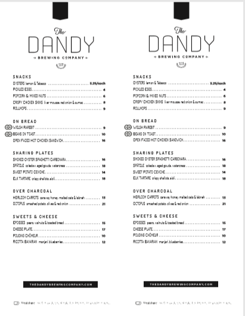

<!DOCTYPE html>
<html lang="en"></html>

    <head> 

     <title> Tasting Room </title> 

     <link rel="stylesheet" href="Tstyle.css">

     <meta name="viewport" content="device-width, initial scale=1.0">

     <meta name="description" content="Food , Don't Don't Eat and Drive , Yummy">

     <Meta name="author" content="Aron Janzen">

    </head>

<body>
    <!-- top nav to be inserted -->

    <h1>The Tasting Room</h1> 
<h3>Serving 20 taps of exceptional craft beer, fine drinking food, cocktails and wine.</h3>

<p>Rated the best new restaurant of 2018 in the Calgary Herald, The Dandy Brewing Company and Tasting Room is a unique dining experience located in the heart of Ramsay. The modern space features 20 taps of Dandy Beers (maybe a few guest taps), a curated cocktail list featuring local spirit, and a daily selection of top quality wines available by the glass. 
Chef Merritt Gordon has put together something amazing, enhancing the already indulgent experience.
Open Daily for lunch and dinner service.</p>
<h3>CURRENT MENU</h3>



<p>There is ample parking in the area, please see our map for the best locations: PARKING MAP
We are pleased and able to accommodate most dietary needs,  Please notify your server
(Vegan, GF, Dairyfree, allergies etc.)</p>

 
 


 
<h2>More information</h2>
<h3>Hours. Snacks. Tours.</h3>
<h3>Hours<h3>
<ul>
<il>Monday: Closed</il><br>
<il>Tuesday: 4pm-10pm</il><br>
<il>Wednesday Noon-10pm</il><br>
<il>Thrusday Noon-10pm</il><br>
<il>Friday Noon-Late</il><br>
<il>Saturday Noon-Late</il><br>
<il>Sunday Noon-8pm</il><br>
</ul>
<p>Phone:587-956-8836</P>
<h3>Reservations</h3>
<p>We now take reservations through Open Table</p>

<!-- embed the open table icon here -->

<h3>Tours</h3>
 <p>Tours are available for private groups. Please email info@dandybrewing.com for more information and booking </p>
<h3>Catering</h3>
<p>he Tasting Room is available on the road. Shoot us a message to learn how we can bring the experience to you. </p>

<h3>Shopping and Offsales</h3>
<p>Dandy is pleased to offer a small offering of merchandise. </p>
<p>Along with  T-Shirts and hats, we are pleased to offer numbered silk screen prints, designed by Artists we are so pleased to call friends, and printed by the team at Burnt Toast Studios. </p>
<p>We are also excited to announce a collaborative with North American Quality Purveyors on a line of T-shirts and baseball caps. We worked together to design custom cut shirts and hats, that fit a Dandy perfectly. 
Dandy does it's best to keep stock of all product packaged on site for offsales. Please see the fridge beside the bar for up to date selection. </p>
<p>The tasting room does fill growlers on site of select beers. Please see the growler menu for up to date offerings.</p>
<p>Note: We do not currently carry empty growlers, so please bring your own, clean, growler for fills.</p>
<!-- Bottom nav to be inserted-->
</body>